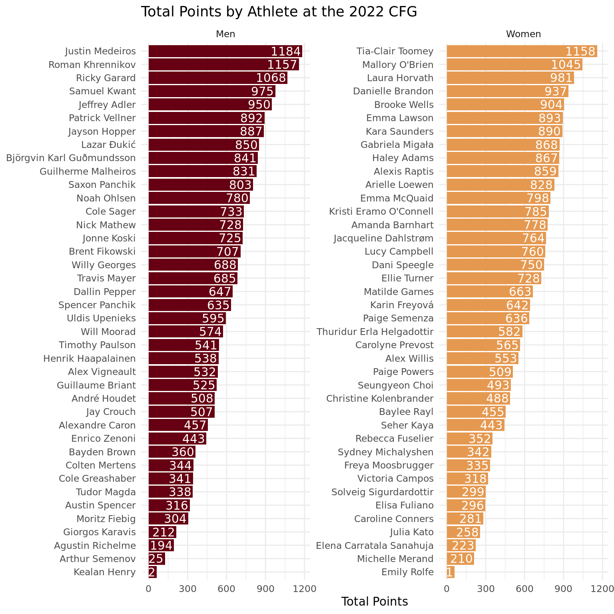

library(tidyverse)
library(cfg)
library(eemisc)
library(harrypotter)
library(glue)
library(ggtext)
theme_set(theme_minimal())
options(
ggplot2.discrete.fill = list(
hp(n = 2, option = "HermioneGranger")
),
ggplot2.discrete.color = list(
hp(n = 2, option = "HermioneGranger")
)
)
#get data
women_df <- fetch_leaderboard(division = "women") |>
mutate(division = "Women")
men_df <- fetch_leaderboard(division = "men") |>
mutate(division = "Men")
combined <- bind_rows(women_df, men_df)
long_by_event <- combined |>
select(athlete, division, starts_with("event")) |>
pivot_longer(
cols = starts_with("event"),
names_to = "event",
values_to = "event_place"
)For me, the Crossfit Games is one of the most exciting weekends of the year. And between the shift in programming and the closeness of the competition on both the mens and womens sides, this year was probably the best Games we’ve seen in a while.
To prolong the Games-high, I decided to dive into the leaderboard data a bit and see what we can take away from the athletes’ performances. I noticed that Morning Chalk Up has a Games leaderboard that I could scrape, and so I cobbled together a package to let me pull down the data and analyze it. If you’re into R and want to use the package, go ahead, but beware that it’s pretty fragile at the moment (I threw it together in a couple of hours on Tuesday), but I’ll probably put in a bit of work to improve it when I have more time.
In general, I won’t explain what all of the code in this post does, but I’ll include it in case folks are curious. If you’re not into R or coding and just want to read the text, then feel free to ignore all of the code throughout :)
Without any further ado, let’s get into it.
Setup
First we’ll do a little bit of set up, and we’ll also pull down the data.
Points
Let’s first take a look at all of the athletes’ total points. Hopefully this is pretty self-explanatory.
ggplot(combined, aes(x = points, y = fct_reorder(athlete, points), fill = division)) +
geom_col() +
geom_text(aes(label = points, x = points - 10), hjust = 1, color = "white") +
facet_wrap(vars(division), scales = "free_y") +
labs(
x = "Total Points",
y = NULL,
title = "Total Points by Athlete at the 2022 CFG"
) +
theme(
legend.position = "none"
)
Number of Top 3 Finishes
Another thing that might be interesting to check out is the number of top 3 finishes from each athlete:
long_by_event |>
filter(event_place <= 3) |>
count(division, athlete) |>
filter(n > 1) |>
ggplot(aes(x = n, y = fct_reorder(athlete, n), fill = division)) +
geom_col() +
geom_text(aes(label = n, x = n - .1), hjust = 1, color = "white") +
labs(
y = NULL,
x = "# of Top 3 Finishes",
title = "Number of Top 3 Finishes by Athlete",
subtitle = "Only athletes with multiple top 3 finishes shown"
) +
theme(
legend.position = "none"
)It’s probably not surprising that Tia dominated here, finishing in the top 3 in 8 of the 14 total scored events. One thing that’s interesting to me, though, is that every athlete who podiumed had 5 (or more) top 3 finishes, while nobody else had more than 3.
Event Placement Variability
We hear a lot about the importance of consistency in Crossfit. After all, the whole point of Crossfit is to be able to do everything well. We always hear that you need to be well rounded and need to avoid bombing events. And whenever Pat Vellner or Laura Horvath or whoever has a bad event, we hear about how that’s not the way to win the Games.
So given all of that, let’s spend some time looking at event-to-event variability for each athlete. To make it a bit easier, I’ll limit this to the top 20 athletes for the men and women.
In the graph below, I’ll show athletes’ average event placement with a dot, and a measure of their variability with a bar. It doesn’t really matter how variability is calculated (it’s just the standard error of the mean in this case), but suffice to say that the wider the bar is, the more variable (less consistent) each athlete’s performance was.
top_20 <- combined$athlete[combined$place <= 20]
long_by_event |>
filter(athlete %in% top_20) |>
group_by(division, athlete) |>
summarize(sem = sd(event_place)/sqrt(14), avg = mean(event_place)) |>
ungroup() |>
ggplot(aes(x = avg, y = fct_reorder(athlete, -avg), color = division)) +
geom_point() +
geom_errorbarh(aes(xmin = avg - sem, xmax = avg + sem), height = 0) +
facet_wrap(vars(division), scales = "free_y") +
labs(
y = NULL,
x = "Event Placement",
title = "Event Avg Placement and Variability"
) +
scale_color_hp_d("HermioneGranger") +
theme(
panel.grid.major.y = element_blank(),
legend.position = "none"
)So we can see a lot of differences between athletes here. Justin Medeiros and Roman Khrennikov were the two most consistent athletes (followed by Tia Toomey). We can also see that Noah Ohlsen and BKG were very consistent, albeit consistently toward the high-middle. On the flip side, we can see people like Laura Horvath, Gui Malheiros, and Dani Speegle had a lot of variability between events – meaning they finished very well in some and very poorly in others.
Finish Range
The analysis above takes all of the athletes’ events into account to calculate variability, but we might just care about each athlete’s best and worst performance, and the spread between those.
finish_range <- long_by_event |>
filter(athlete %in% top_20) |>
group_by(division, athlete) |>
summarize(
worst = max(event_place),
best = min(event_place)
) |>
ungroup() |>
left_join(select(combined, place, athlete), by = "athlete")
ggplot(finish_range, aes(color = division, y = fct_reorder(athlete, -place))) +
geom_segment(aes(x = best, yend = fct_reorder(athlete, -place), xend = worst)) +
geom_point(aes(x = worst), size = 7, shape = 21, fill = "white") +
geom_point(aes(x = best), size = 7, shape = 21, fill = "white") +
geom_text(aes(x = worst, label = worst)) +
geom_text(aes(x = best, label = best)) +
scale_color_hp_d("HermioneGranger") +
facet_wrap(vars(division), scales = "free_y") +
labs(
x = "Event Finish",
y = NULL,
title = "Best and Worst Finishes for Top 20 Athletes"
) +
theme(
legend.position = "none"
)
Although this shows something slightly different that the previous graph, it basically reaffirms what we saw there. One interesting takeaway is that Justin Medeiros won the Games without actually winning any events. Another interesting point is that Roman Khrennikov had the best “worst event finish” out of everyone, never finishing lower than 15th, which is pretty incredible. On the women’s side, we see that quite a few athletes spanned the whole range between first and last (recall that Emily Rolfe withdrew, so last was 39th for much of the competition). Laura Horvath, Dani Speegle, and Lucy Campbell all went from worst to first, and a few others (Kara Saunders, Amanda Barnhart) managed nearly the same. To be fair, there were a few instances of this on the men’s side, too (Adler, Malheiros, Pepper).
Score Variability vs Overall Finish
This doesn’t really tell us the story about how much consistency matters, though. On the one hand, Medeiros and Khrennikov were the most consistent and also finished top 2. On the other hand, Noah Ohlsen was also incredibly consistent, but he finished 12th, whereas Laura Horvath had a lot of variability in her performances and finished 3rd. So let’s plot athletes’ overall finish (on the X axis) against their score variability (on the Y axis). If these are strongly related, we’d expect to see them form a line. If they’re not strongly related, they’ll look like a blob.
sem_by_place <- long_by_event |>
group_by(division, athlete) |>
summarize(sem = sd(event_place)/sqrt(14)) |>
ungroup() |>
left_join(select(combined, athlete, place), by = "athlete")
sem_by_place |>
ggplot(aes(x = place, y = sem, color = division)) +
geom_point() +
scale_color_hp_d("HermioneGranger") +
facet_wrap(vars(division)) +
labs(
x = "Place",
y = "Variability"
) +
theme(
legend.position = "none"
)It doesn’t really seem like there’s much here. But we can calculate the actual correlation coefficient to get a number to summarize the relationship.
cor(sem_by_place$sem, sem_by_place$place)[1] -0.1818332So there’s a small negative correlation here – people who varied more between events tended to place slightly worse overall. But it’s a pretty small relationship.
Point Trajectories for Top 5
The thing that always makes the Games interesting are the races for the podium, and this year had some great races. On the men’s side, there was a lot of jostling between the top 3 for position. On the women’s side, Tia didn’t pull away until about event 10, and even Tia and Mal had locked up the gold and silver, there was an incredibly exciting race for 3rd thanks to a big comeback from Laura Horvath. So let’s plot the point trajectories for the athletes that ended up finishing in the top 5:
top_5 <- combined$athlete[combined$place <= 5]
scores_men <- running_scores(men_df) |>
mutate(division = "Men")
scores_women <- running_scores(women_df) |>
mutate(division = "Women")
scores_combined <- bind_rows(scores_men, scores_women) |>
filter(athlete %in% top_5)
max_athlete <- scores_combined |>
group_by(athlete) |>
summarize(score = max(cum_points))
scores_combined <- scores_combined |>
left_join(max_athlete, by = "athlete")
ggplot(scores_combined, aes(x = event, y = cum_points, color = athlete)) +
geom_line() +
geom_point() +
geom_text(aes(label = str_replace_all(athlete, "^(.*) (.*)", "\\2"), y = score), x = 14.5, hjust = 0) +
facet_wrap(vars(division)) +
scale_x_continuous(limits = c(0, 19), breaks = seq(2, 14, by = 2)) +
labs(
title = "Point Trajectories for Top 5 Athletes",
x = "Event #",
y = "Total Points"
) +
theme(
panel.grid.minor.x = element_blank(),
legend.position = "none"
)Laura Horvath’s Comeback
And the last thing I’ll include here is a visualization of Laura Horvath’s huge comeback. I’m a major LH fan, and even though I had a moment of doubt after the HSPU event, I was stoked to see her come back and take 3rd after absolutely crushing it during Sunday’s events.
scores <- running_scores(women_df)
lh_scores <- scores[scores$athlete == "Laura Horvath", ] |>
select(event, cum_points, athlete)
# function to get 3rd place for a given event
third_place <- function(x, event) {
tmp <- event_leaderboard(x, event)
res <- tmp[tmp$place == 3, c("event", "cum_points")]
res$athlete <- "third"
res
}
events <- unique(scores$event)
thirds <- map_dfr(events, ~third_place(women_df, .x))
x <- bind_rows(lh_scores, thirds)
hungary_green <- "#436F4D"
bronze <- "#CD7F32"
ggplot(x, aes(x = event, y = cum_points, color = athlete)) +
geom_line() +
geom_point(shape = 21, fill = "white", size = 10) +
geom_text(aes(label = cum_points)) +
scale_color_manual(
values = c(hungary_green, bronze)
) +
labs(
title = glue("<span style='color:{hungary_green}'>Laura Horvath's</span> Charge to the <span style='color:{bronze}'>Podium</span>"),
y = "Total Points",
x = "Event #",
subtitle = glue("The <span style='color:{bronze}'>bronze line</span> represents 3rd place after any given event")
) +
theme_ee(size = 12) +
theme(
legend.position = "none",
panel.grid.minor = element_blank(),
panel.grid.minor.x = element_blank(),
panel.grid.minor.y = element_blank(),
plot.title = element_markdown(size = 16)
)That’s all for now – maybe I’ll do another once the Rogue Invitational rolls around in October. And who knows, maybe Tia will hang up her shoes and we’ll have a new top dog in the women’s division.
Reuse
Citation
BibTeX citation:
@online{ekholm2022,
author = {Ekholm, Eric},
title = {Crossfit {Games} {Analysis}},
date = {2022-08-12},
url = {https://www.ericekholm.com/posts/crossfit-games-2022},
langid = {en}
}
For attribution, please cite this work as:
Ekholm, Eric. 2022. “Crossfit Games Analysis.” August 12,
2022. https://www.ericekholm.com/posts/crossfit-games-2022.